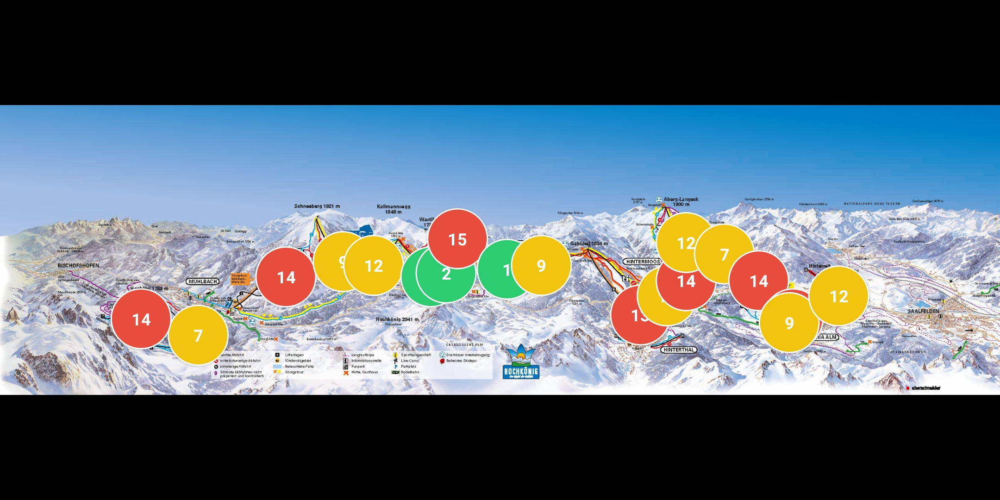

Operational Control
Monitor pressure points mountain-wide and optimize lift usage distribution.
Monitor pressure points mountain-wide and optimize lift usage distribution.
Product Positioning
Guests care less about total distance and more about waiting friction. By reducing time spent in lines, QueueVision increases actual ski time and perceived value per pass.
The app nudges users toward lower-load lifts, balancing demand across the network. This reduces bottlenecks and improves throughput without building new infrastructure.
A ski area known for smart routing and short waits wins stronger reviews, higher return rates, and better season-pass conversion through trust in operational quality.
QueueVision generates a lift-by-lift dataset for planning staffing, signage, maintenance windows, and future investment priorities.
High-Level Technical System
One camera node per ski lift captures queue dynamics from a fixed angle and transmits compressed streams.
Computer vision models detect people density, estimate queue depth, and transform observations into rolling wait-time predictions.
Real-time and forecasted waiting times are served to the ski map and operator dashboard for decision support.
Skiers see an interactive map displaying current wait times at every lift on the mountain.

Example installation A: one ski lift where QueueVision is deployed.

Example installation B: another ski lift using the same QueueVision system.

Control layer: live queue intelligence and decision support dashboard.
After 3-6 months of data collection, QueueVision's AI engine learns seasonal and daily patterns. The system can then predict waiting times for each lift throughout the day with high accuracy, enabling proactive guest planning and operational optimization.


Guest app view: live waiting times displayed for all ski lift stations.
Economics
Hardware
400 EUR per ski lift
Camera system installed at each lift queue observation point.
Software Setup
2,000 EUR one-time
Platform onboarding, resort map integration, and operational configuration.
Service Fee
1,200 EUR per year
AI updates, system maintenance, support, and analytics access.
Cost Reduction for Existing Camera Infrastructure
If your resort already has cameras installed that are pointed at lift queues or can be repositioned to monitor queue areas, the hardware cost is reduced by 400 EUR per existing camera that can be integrated into the QueueVision system. Contact our team for a site assessment.
Quick estimate using your number of lifts. This does not model all upside factors (brand value, retention, day-pass conversion), so it should be interpreted as a conservative baseline.
Go-To-Market
For testing operational impact on high-traffic lifts
Most Relevant
Complete guest-facing low-wait navigation experience
For operators with multiple ski areas
Startup Story
QueueVision is a technical startup focused on one high-value mission: reduce waiting friction at ski lifts so mountains can deliver measurably better experiences. Our approach combines reliable edge camera systems, computer vision intelligence, and practical operator tools that create immediate impact with low hardware cost.
We are building the decision layer that helps ski areas run smarter, protect reputation, and scale guest satisfaction season after season.

FAQ
Deployment is lightweight: one camera system per lift, initial calibration, and app integration. Resorts can phase installation by lift priority.
QueueVision targets the core pain point that drives guest frustration. Lower waiting friction improves perceived resort quality, supports return visits, and reduces revenue leakage from early session drop-off.
The yearly 1,200 EUR service fee covers AI model maintenance, updates, monitoring, support, and platform continuity.
The annual service fee does not include repair or replacement of camera hardware. Physical camera maintenance, repairs, or replacement of damaged units are the responsibility of the ski area and are invoiced separately as needed.
Early Access
Get pilot availability, rollout timelines, and technical onboarding details.